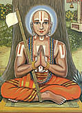

|

|
RAMANUJACARYA (1017-1137) was the principal acarya in the Sri sampradaya, one of the four main lines of Vaisnava teachers and disciples. His Vedanta-sutra commentary -- Sri-bhasya -- establishes the doctrine known as Visistadvaita, "qualified nondualism." A staunch proponent of the philosophy of personalism, he taught that although the Supreme Lord and the individual souls are qualitatively one, there is still a difference between them, for the Lord is infinite and the living entities are infinitesimal. Srila Ramanujacarya travelled extensively throughout India, teaching personalism and defeating proponents of monistic philosophy. He founded seventy-four centers of Sri Vaisnavism and initiated seven hundred sannyasis (renounced monks), twelve thousand brahmacharis (celibate students), and thousands of householders, including kings and wealthy landowners. | |
| © 2002-2004 ISKCON |